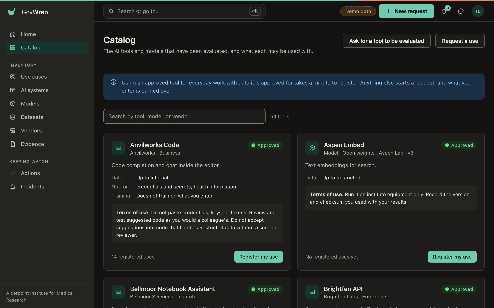
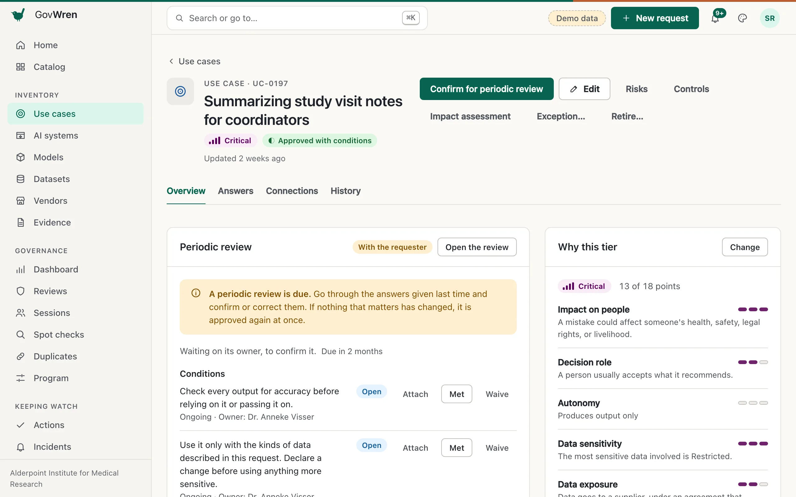
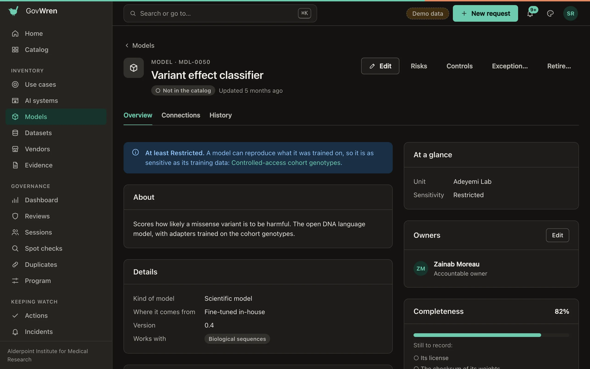
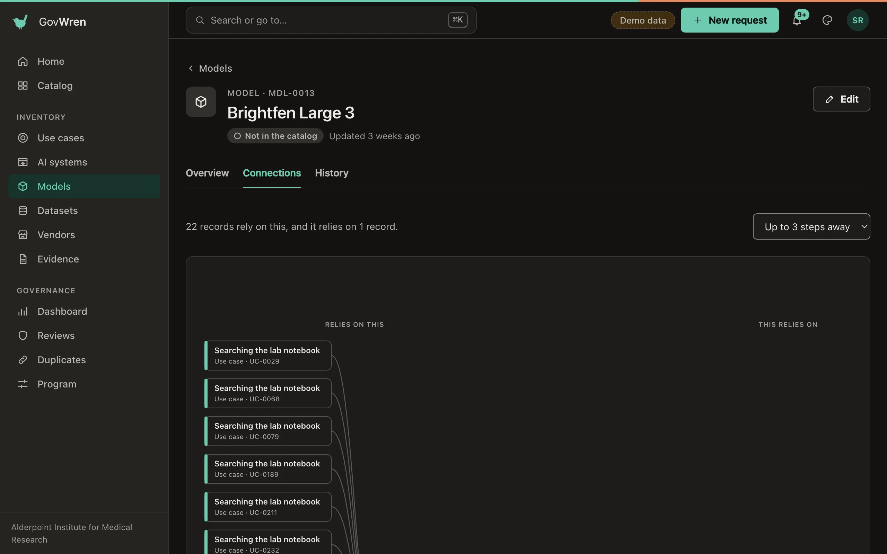
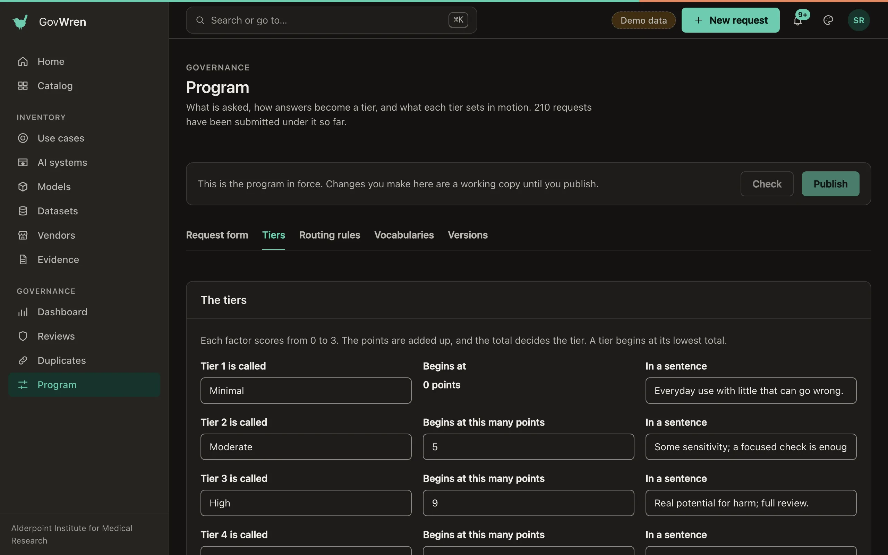
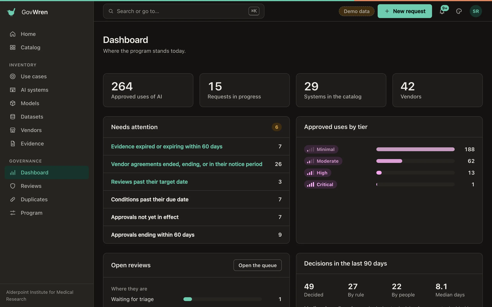
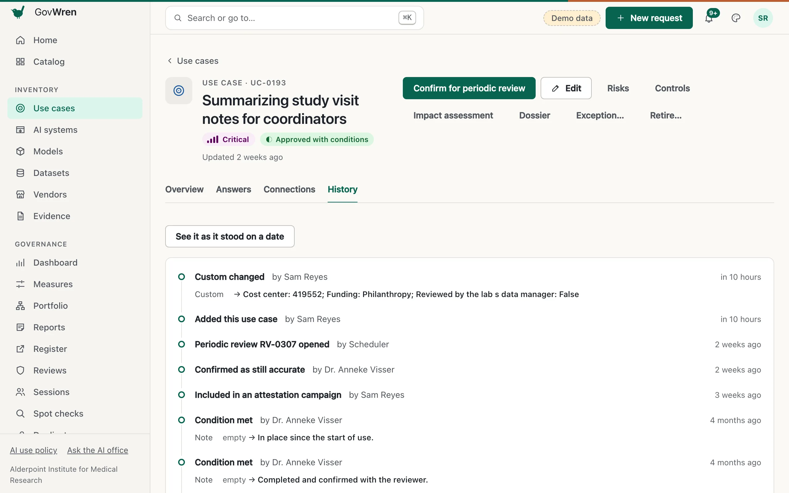
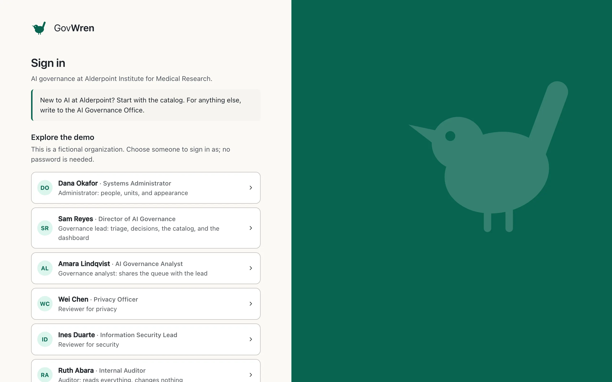

Open AI governance for research organizations
AI governance people actually use.
GovWren is an open system of record for AI governance: one front door for every AI request, review in proportion to the risk, a connected inventory of what your organization actually runs, and evidence behind every decision. It is built first for organizations where many labs and units adopt AI faster than any committee can track.


A front door, not a gate
A catalog answers "may I use this?" in seconds, and registering an everyday use takes a minute. The easy path is the governed one.
In proportion
A tier that explains itself decides who reviews, who decides, and how often anyone looks again. Most requests never need a meeting.
Passive by design
No scanners, agents, or log collectors. GovWren knows what people tell it, and makes telling it worth their while.
Open and yours
Apache 2.0, runs on a laptop or one server, and takes your name, your logo, your forms, and your rules.
The catalog
"May I use this?" answered in seconds
Every tool and model your organization has evaluated is in one searchable catalog, with its standing, the data it may be used with, and its terms of use. Using an approved tool for everyday work is registered in a minute and approved on the spot.


Requests
A form that asks only what it needs
Anything new starts with a short form. Questions appear only when earlier answers call for them, and the likely risk tier is shown beside the form as it changes, with the reason for every part of it.


Review
One packet, one decision
Rules route each request to the reviewers it needs, who work in parallel. Whoever decides sees one packet: the request, why it has its tier, every finding, and the discussion. Nobody reviews or decides their own request.


Decisions
Every decision, with its reasons
A decision carries its rationale, the conditions it was made on, and who owns each one. Conditions that must be met before use hold the approval until they are, and evidence can be attached to show they were.


The inventory
Models you run yourselves, on the record
Open weights on a lab workstation and models fine-tuned in-house are governed like anything else: where the weights came from, their checksum and license, where they run, and a model card. A model is never less sensitive than the data it was trained on.


Connections
See what depends on what
Use cases, systems, models, datasets, and vendors are linked. When a supplier withdraws a model, one tab shows every system built on it and every use case that relies on those systems.


Your program
Change the rules without a developer
The form, the tiers, the routing rules, and the vocabularies are edited in the app. Before publishing a change you see what it would have done to the requests already decided, and nothing that was decided is ever rewritten.


Oversight
Where the program stands, today
The dashboard counts approved uses by tier, unit, and area, open reviews by age, what is overdue, and how complete the records are. Every total and bar opens the records it counts.


An unbroken record
History that cannot be quietly changed
Every change to every record is written to an append-only history, with who, when, and each value before and after. Entries are chained by hash, and one command proves that nothing was altered or removed.


Your sign-in
Single sign-on with Microsoft Entra ID or any OpenID Connect provider, with roles from its groups. Single sign-on →
Your server
SQLite on a laptop or PostgreSQL in production, one process, and a data home you can back up as a whole. Configuration →
Your brand
Your name, logo, and accent color, three palettes, light and dark, with contrast checked as you choose. Make it yours →
Checked
Every screen audited for accessibility in every palette, by day and after dark, and every route checked against one table of who may call it.
Try it in a minute
GovWren needs uv, which provides Python 3.12 or newer. The demo builds an invented medical research institute with thirty months of history: 66 units, about 260 people, 60 models, 70 datasets, and 300 use cases with their reviews, decisions, and evidence.
git clone https://github.com/robert-mcdermott/govwren.git
cd govwren
uv sync
uv run govwren demo
uv run govwren --config demo/govwren.toml serveThen open http://127.0.0.1:8010 and choose who to sign in as. To set GovWren up for your own organization, start with Getting started.
